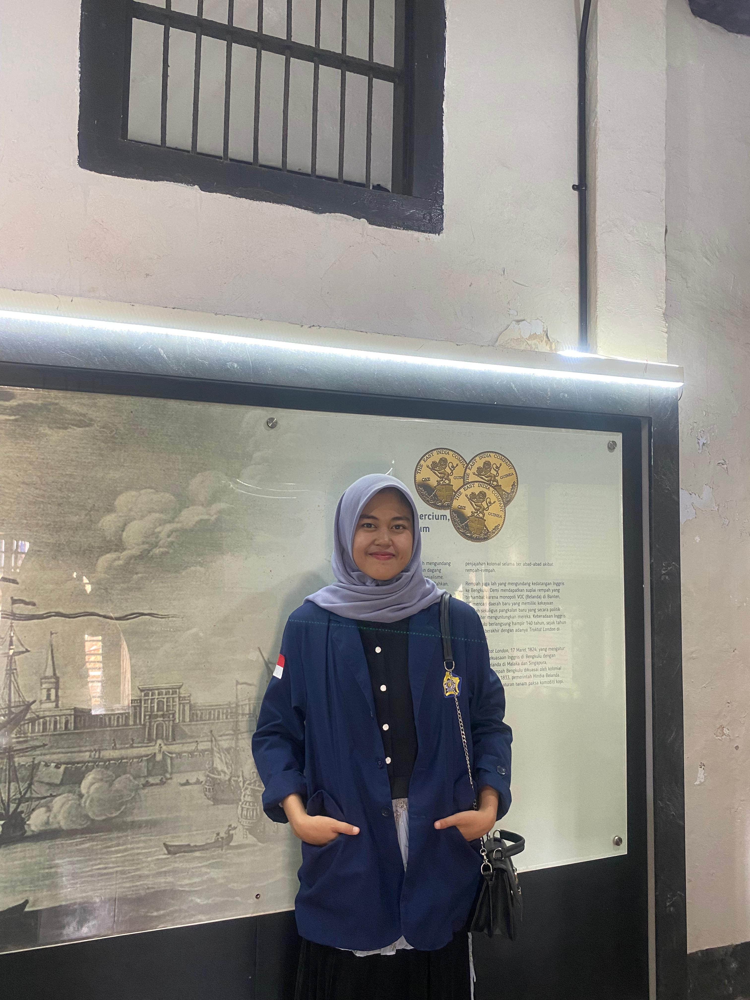

Data Diri

Nama: Sopia Sahban Ramadani
NPM: A1D024009
Program Studi: Pendidikan Biologi
Materi Biologi
keanekaragaman tumbuhan
- A.Tumbuhan Lumut Lumut merupakan organisme multiseluler eukariotik yang menunjukkan peralihan ciri talus ke kormus yang telah beradaptasi dengan kehidupan darat, sehingga dimasukkan ke dalam kingdom plantae.lumut dapat dengan mudah dijumpai di tempat lembab atau basa, seperti menempel pada pohon di permukaan batu bata titik di kutub, lumut merupakan penyusun ekosistem tundra ( panra lumut). Lumut yang hidup di permukaan batu bata berbentuk seperti beludru yang berwarna hijau. Dalam daur hidupnya, lumut mengalami dua fase kehidupan, yaitu fase gametofit (haploid) dan fase sporofit (diploid)
- B.Tumbuhan Paku (pteridophyta) Tumbuhan paku merupakan tumbuhan berpuluh yang tidak berbiji, memiliki susunan tubuh khas yang membedakannya dengan tumbuhan yang lain.Tumbuhan ini terdapat di manamana(Kosmopolitan).
- C.Tumbuhan berbiji (Spermatophyta) Istilah spermatophyta berasal dari bahasa Yunani sperma berarti biji dan pita berarti tumbuhan.Semua tumbuhan berbiji adalah heterospora, yang memiliki dua jenis sporangia berbeda. Megasporangia menghasilkan megaspora yang akan menjadi gametofit betina dan Mikroporangia menghasilkan mikrospora yang akan menjadi gametofit jantan. Dalam sistem Klasifikasi lima kingdom tumbuhan berbiji digolongkan menjadi dua golongan, yaitu berbiji T(Gymnospermae) dan tumbuhan berbiji tertutu (Angiospermae).
File
Unduh file berikut: